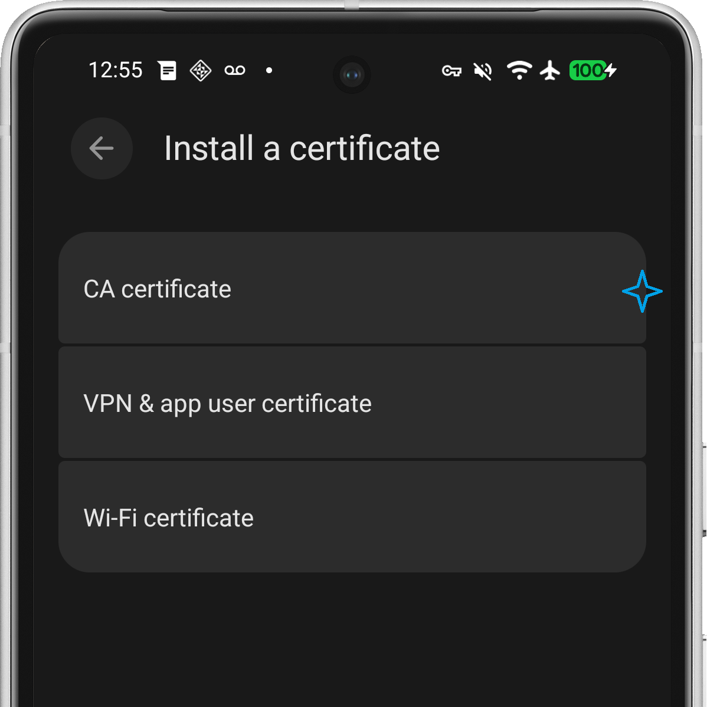
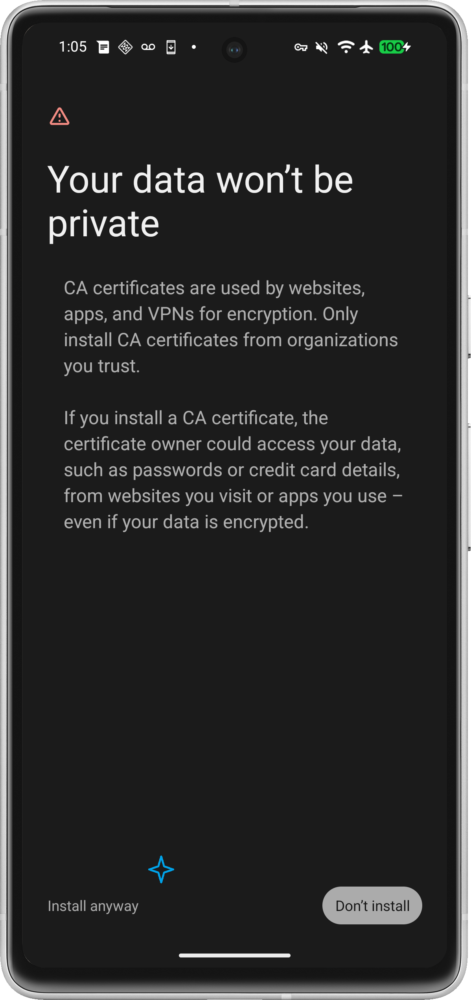
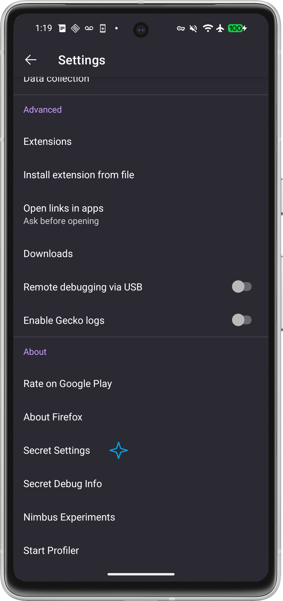
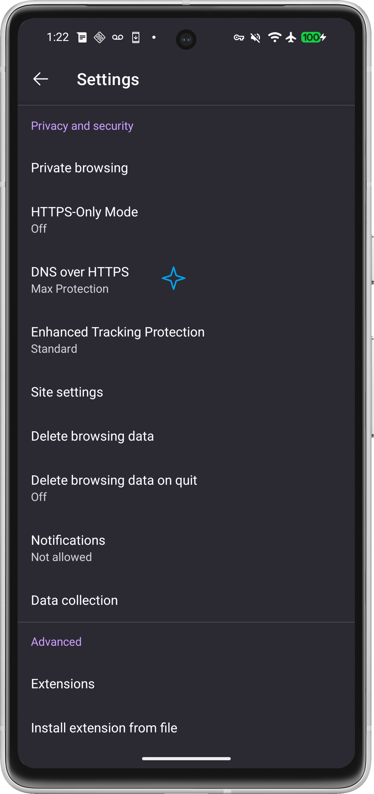
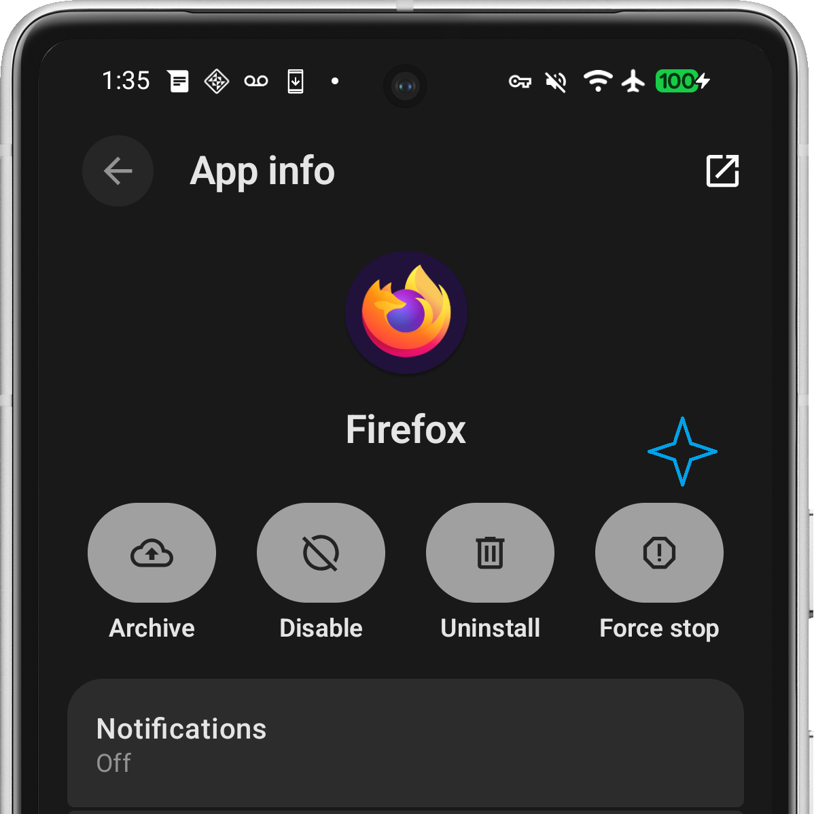

HNS Go - Step by Step Installation Guide
Step 1: Install CA Certificate (Required)
The CA certificate must be installed in Android's trust store for Firefox to trust the DoH server.
1.1 Tap "Save Certificate" to Downloads
1.2 Tap the button below to go to Security and privacy settings, from there, select More security & Privacy → Encryption & Credentials → Install a certificate
1.3 Tap on 'CA certificate' → 'Install anyway'
1.4 look for the file 'hns-go-ca.crt' in Downloads and select it
1.5 Enter name 'HNS Go CA' → Tap OK
⚠️ Certificate must be installed before Firefox can use DoH
Step 2: Enable Third-Party CA in Firefox (Required)
Firefox requires an additional setting to trust user-installed CA certificates:
2.1 Open Firefox → Settings → About Firefox
2.2 Tap the Firefox logo 7 times to enable Secret Settings
2.3 Go to Settings → Secret Settings → Enable 'Use third party CA certificates'

⚠️ Without this step, Firefox will reject the DoH server certificate
Step 3: Configure Firefox DoH
3.1 Open Firefox → Settings → Privacy and security
3.2 Enable 'DNS over HTTPS' → Select 'Max Protection'
3.3 Choose provider 'Custom' and paste the DoH URL below:
3.4 Quit (Force Stop) and restart Firefox
3.5 After restarting Firefox, visit this URL to accept the certificate:
This will trigger Firefox to show a certificate warning. Click 'Advanced' → 'Accept the Risk and Continue'.
⚠️ Firefox must accept the certificate before DoH queries will work
To verify: Open Firefox → about:networking#dns → Check if queries show your DoH URL
Step 4: Enable Ad Blocking
Block ads and trackers by using a blacklist from known references:
4.1 Enable the Ad Blocking toggle in HNS Go app
list is updated once toggled on, sources: StevenBlack, OISD, AdGuard
4.2 (Optional) Enable "Stricter Mode minimize tracking" for enhanced privacy

The blacklist will refresh automatically when toggled on or off.